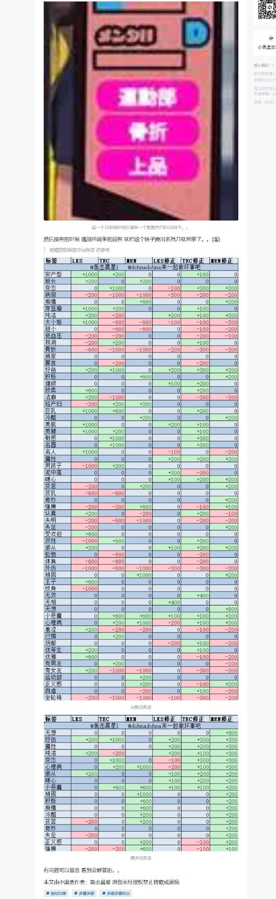

人才词条一览
据点经营里可招募、可派遣的人物（下称人才，游戏内作「人材」）各带三项属性：
| 属性 | 含义 |
|---|---|
| 容貌 LKS | 对外的门面数值，参与各类竞争判定 |
| 技巧 TEC | 与 武器系统与选型 里的技巧同名，同样关系被动技能与判定的成功率 |
| 精神 MEN | 即耐久。它会随玩法流程持续消耗，是人才最需要补强的一项 |
词条（标签）是叠加在这三项属性上的修正。每个人才最多同时拥有 3 个词条， 因此「凑出三个能把精神拉回来的词条」是人才养成的核心。属性、状态与经营界面的整体说明 见 人材属性与经营环节。
词条一览
| 类别 | 词条 | LKS | TEC | MEN | LKS修正 | TEC修正 | MEN修正 |
|---|---|---|---|---|---|---|---|
| 安产型 | +1000 | +200 | 0 | 0 | +100 | 0 | |
| 班长 | +200 | 0 | +200 | 0 | 0 | 0 | |
| 四天王 | 变态 | 0 | +1000 | 0 | -100 | +300 | +300 |
| 病弱 | -200 | -1000 | -1000 | -300 | -200 | -200 | |
| 八大金刚 | 痴情 | 0 | 0 | +600 | 0 | 0 | +200 |
| 穿显瘦 | +1000 | +200 | 0 | 0 | +100 | 0 | |
| 三幻神 | 纯洁 | +200 | -200 | 0 | +200 | +100 | +300 |
| 大小姐 | +1000 | -600 | -600 | -100 | -100 | -300 | |
| 胆小 | 0 | -600 | -600 | 0 | -100 | -200 | |
| 低血压 | -200 | -200 | 0 | 0 | -200 | -100 | |
| 耳洞 | -200 | +200 | 0 | 0 | +100 | 0 | |
| 骨折 | -600 | -1000 | -1000 | -200 | -300 | -300 | |
| 顾家 | 0 | 0 | 0 | 0 | 0 | 0 | |
| 寡言 | 0 | -200 | 0 | 0 | -200 | 0 | |
| 三幻神 | 好色 | +200 | +1000 | 0 | +200 | +300 | +300 |
| 八大金刚 | 积极 | 0 | 0 | +600 | 0 | 0 | +200 |
| 健硕 | 0 | 0 | 0 | +100 | +200 | 0 | |
| 娇柔 | +600 | 0 | 0 | 0 | +200 | 0 | |
| 洁癖 | +200 | -1000 | 0 | 0 | -300 | -300 | |
| 经产妇 | -200 | +200 | +200 | 0 | 0 | 0 | |
| 巨乳 | +1000 | +600 | 0 | 0 | +200 | 0 | |
| 八大金刚 | 冷酷 | 0 | 0 | +200 | 0 | 0 | +200 |
| 美肌 | +1000 | 0 | 0 | +200 | +100 | 0 | |
| 美腿 | +1000 | +200 | 0 | 0 | +100 | 0 | |
| 敏感 | 0 | +1000 | 0 | 0 | +300 | 0 | |
| 名器 | 0 | +1000 | 0 | 0 | +300 | 0 | |
| 名人 | +1000 | 0 | 0 | -100 | 0 | -200 | |
| 三幻神 | 魔性 | 0 | 0 | 0 | +200 | +200 | +300 |
| 男孩子 | -1000 | +200 | 0 | 0 | 0 | 0 | |
| 泥中莲 | 0 | 0 | 0 | +300 | -300 | 0 | |
| 四天王 | 暖心 | 0 | 0 | 0 | +100 | +200 | +200 |
| 八大金刚 | 贫苦 | -200 | 0 | +200 | 0 | 0 | +200 |
| 贫乳 | -600 | -600 | 0 | 0 | 0 | 0 | |
| 八大金刚 | 奇妙 | 0 | 0 | 0 | 0 | 0 | +200 |
| 强横 | -200 | -200 | +600 | 0 | -100 | +100 | |
| 认真 | +200 | 0 | -200 | 0 | +200 | -100 | |
| 失明 | -200 | -600 | -1000 | 0 | -200 | -200 | |
| 八大金刚 | 失足 | -200 | 0 | 0 | 0 | 0 | +200 |
| 受欢迎 | +600 | 0 | 0 | 0 | 0 | 0 | |
| 双性 | -1000 | +600 | 0 | 0 | +300 | 0 | |
| 四天王 | 顺从 | +200 | 0 | 0 | +100 | +200 | +200 |
| 松弛 | 0 | -600 | 0 | 0 | -300 | 0 | |
| 体臭 | -600 | -600 | 0 | 0 | -200 | 0 | |
| 外伤 | -1000 | -600 | -1000 | -300 | -300 | -300 | |
| 八大金刚 | 顽固 | 0 | 0 | +1000 | 0 | 0 | +200 |
| 王子 | +600 | 0 | 0 | 0 | 0 | 0 | |
| 纹身 | -1000 | 0 | 0 | 0 | 0 | 0 | |
| 无双 | 0 | 0 | 0 | 0 | +400 | 0 | |
| 无相 | 0 | 0 | 0 | +400 | 0 | 0 | |
| 特殊 | 无想 | 0 | 0 | 0 | 0 | 0 | +800 |
| 四天王 | 小恶魔 | 0 | +600 | +600 | +100 | +100 | +200 |
| 四天王 | 心理病 | 0 | +200 | +1000 | -200 | +100 | +300 |
| 羞涩 | +200 | -200 | -200 | 0 | -100 | -200 | |
| 已婚 | 0 | +200 | 0 | 0 | 0 | 0 | |
| 阴郁 | 0 | 0 | 0 | -200 | +100 | -200 | |
| 优等生 | +200 | 0 | 0 | 0 | +100 | 0 | |
| 优雅 | +600 | 0 | 0 | 0 | -100 | -200 | |
| 有男友 | 0 | +200 | 0 | 0 | 0 | -100 | |
| 有女友 | +200 | -1000 | -1000 | 0 | -300 | -300 | |
| 运动部 | 0 | 0 | +200 | 0 | 0 | 0 | |
| 八大金刚 | 正义感 | 0 | 0 | +200 | 0 | -100 | +200 |
| 自卑 | 0 | 0 | -200 | 0 | +100 | -300 | |
| 坐轮椅 | -200 | -1000 | -1000 | -100 | -300 | -200 |
读表要点
- 表里有两套数值：
LKS / TEC / MEN三列，与LKS修正 / TEC修正 / MEN修正三列。
原帖没有说明这两套的区别，本站照录、不做推断。能直接观察到的是量级差别： 前一套最大到 ±1000，后一套基本在 ±100～±400。 社区谈「三幻神 / 四天王 / 八大金刚」时，用的是后一套（修正）的数值。
- 「类别」列是本站补的：只在社区已归类的词条上标注，其余留空。
分组名称（三幻神 / 四天王 / 八大金刚）是社区习惯叫法，不是游戏内原文。
- 三组的分工：三幻神与四天王会同时调整容貌与技巧；八大金刚里 7 种只加精神，
只有「正义感」带一个技巧修正。
- 「无想」是特殊词条，不在常规词条池内，只能通过导入自建人物获得，
精神修正 800，远超其余任何词条。
- 「强横」的数值本次已补齐：
0 / -100 / +100。此前站内只有这个词条名、没有数值。 0与空白不是一回事：表里的0是原表写明的零值；只有「类别」列是刻意留空的，
渲染出来会显示为 —。
- 原表里「安产型」与「穿显瘦」两行数值完全相同（都是
+1000 / +200 / 0与0 / +100 / 0），
疑为原帖重复粘贴。本站照录，未做去重。
机制说明
- 词条数上限为 3。已有同名词条时不再重复生效。
- 换掉词条时数值会一并回退：某词条带来的加减值，在它被移除后会原样扣回 / 加回。
原文特别提醒，像「心理病」「顽固」这类精神修正很高的词条，撤掉时要留意精神值的变化。
- 词条是怎么拿到手的，见 人材属性与经营环节 里的「经营环节」一节。


内容出处
本页表格的数值：小黑盒作者 轰击晨星（
@轰击晨星i/@dohnadohna来一起做坏事吧） 自制的词条表，原话是「附赠的自制官中词条表 供参考」。 这张表是玩家自制的中文译名 + 数值对照表，不是游戏内原文数据， 译名与官方中文可能存在出入。表中 63 行 × 7 列已逐格核对； 「类别」列是本站按下面第二个来源补的。**社区分级（三幻神 / 四天王 / 八大金刚），以及「词条数上限 3」「换词条时数值会回退」 两条机制：百度贴吧多娜多娜吧**攻略《战神词条推荐 最强人才词条一览》， 作者 爱情de天国；按逗游网 2021-04-06 的转载版本核对：
https://doyo.cn/article/437242原帖还包含一套「十位人才的词条配置方案」（谁配哪三个词条、用来覆盖全部标签池）。 本页只收词条的数值与机制，配装清单请直接查阅原帖。